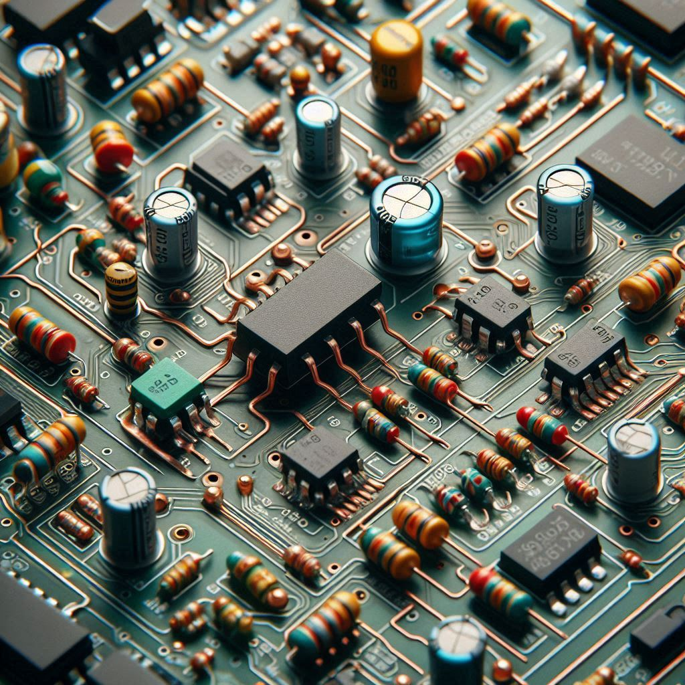

El interesante mundo de la programacion
Es el arte de dar instrucciones precisas a una computadora para que realice tareas específicas. Es como escribir una receta, pero en lugar de cocinar, estás creando software.
¿Por qué aprender a programar?
Desarrolla tu lógica:
La programación te enseña a pensar de manera estructurada y a resolver problemas de forma eficiente.
Crea tus propias herramientas: Desde aplicaciones para tu teléfono hasta sitios web, las posibilidades son infinitas.!
Ver más imagenes

El interensate mundo de la electronica
La electrónica se encarga de crear y utilizar circuitos eléctricos para procesar información y energía. Estos circuitos están compuestos por componentes como resistencias, capacitores, transistores y muchos otros, que trabajan en conjunto para realizar diversas funciones.
La electrónica es una disciplina fundamental que ha transformado nuestra forma de vivir y trabajar. Su estudio y aplicación son esenciales para comprender y participar en el mundo tecnológico actual.
Ver más imagenes
La tecnología del futuro
Conoce los avances tecnológicos que están cambiando el mundo y cómo podrían impactar nuestras vidas en los próximos años.
La tecnología del futuro es la fusión de disciplinas como la inteligencia artificial, la robótica, la biotecnología y la nanotecnología, que están dando lugar a innovaciones disruptivas que transformarán la forma en que vivimos y trabajamos.
Ver más imagenes
{kind=link}
{kind=link}
{kind=link}